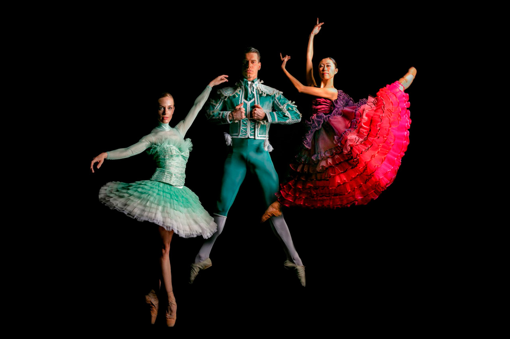

Μπαλέτο
ΔΟΝ ΚΙΧΩΤΗΣ
Τιάγκο Μπορντίν, Μαριύς Πετιπά / Λούντβιχ Μίνκους, Τζων Λόνγκσταφ
Το Μπαλέτο της Εθνικής Λυρικής Σκηνής παρουσιάζει μια νέα φιλόδοξη παραγωγή του Δον Κιχώτη του Λούντβιχ Μίνκους, ενός από τα πιο διάσημα μπαλέτα όλων των εποχών. Η χορογραφία του Τιάγκο Μπορντίν βασίζεται στην κλασική χορογραφία του Μαριύς Πετιπά, η οποία πρωτοπαρουσιάστηκε το 1869 στο Μπολσόι.
Ο Δον Κιχώτης είναι ένα από τα σημαντικότερα και πιο δημοφιλή έργα του κλασικού ρεπερτορίου του μπαλέτου. Μέσα από τη μοναδική μουσική του Μίνκους, η χορογραφία περιγράφει μια ιστορία για τα υψηλά ιδανικά του ιπποτισμού που συγκινεί διαχρονικά συνδυάζοντας κωμικά και ρομαντικά στοιχεία.
Θεωρείται ότι αποτελεί μεγάλη πρόκληση για τους χορευτές του κλασικού χορού, λόγω του υψηλού βαθμού τεχνικής δυσκολίας, καθώς ο τρόπος με τον οποίο αποδίδεται κρίνει την ποιότητα του συνόλου ενός Μπαλέτου. Δεν είναι τυχαίο ότι έχει επικρατήσει να λέγεται στον κόσμο του κλασικού χορού ότι «ομάδα που μπορεί να αποδώσει σωστά τον Δον Κιχώτη είναι ικανή να χορέψει τα πάντα». Το έργο αυτό έχει αποτελέσει πηγή έμπνευσης για πολλούς χορογράφους και χορευτές σε όλο τον κόσμο και κάθε χρόνο ανεβαίνει στα περισσότερα λυρικά θέατρα του πλανήτη.
O Δον Κιχώτης βασίζεται σε επεισόδια από το διάσημο μυθιστόρημα του Μιγκέλ ντε Θερβάντες (1547-1616), που εκδόθηκε σε δύο τόμους το 1605 και 1615 αντίστοιχα. Η υπόθεση του μπαλέτου αντλεί κυρίως από τον δεύτερο τόμο και επικεντρώνεται στον θυελλώδη έρωτα της Κιτέριας –Κίτρι στο μπαλέτο– με τον κουρέα Μπαζίλιο. Οι περιπέτειες του Δον Κιχώτη και του υπηρέτη του Σάντσο Πάντσα μένουν σε δεύτερο επίπεδο
Για τη νέα παραγωγή του Δον Κιχώτη, ο Διευθυντής του Μπαλέτου της ΕΛΣ Κωνσταντίνος Ρήγος επέλεξε καλλιτέχνες διεθνούς ακτινοβολίας, τον χορογράφο Τιάγκο Μπορντίν για να αναβιώσει την κλασική χορογραφία του Πετιπά, τον διεθνώς αναγνωρισμένο Έλληνα σκηνογράφο Γιώργο Σουγλίδη για τα σκηνικά και τη διάσημη Ελληνίδα fashion designer Μαίρη Κατράντζου για τα κοστούμια. Μαζί τους, η Ειρήνη Βιανέλλη στον σχεδιασμό του animation και ο Χρήστος Τζιόγκας στους φωτισμούς.
Τη μουσική διεύθυνση της παραγωγής υπογράφουν οι διακεκριμένοι αρχιμουσικοί Στάθης Σούλης και Γιώργος Μπαλατσινός. Τη Χορωδία της ΕΛΣ διευθύνει ο Αγαθάγγελος Γεωργακάτος.
Στις δύο υψηλού επιπέδου διανομές, το κοινό θα έχει την ευκαιρία να απολαύσει νεότερους και καταξιωμένους Έλληνες πρωταγωνιστές, όπως τους Ελεάνα Ανδρεούδη, Βαγγέλης Μπίκος, Μαρία Κουσουνή, Βανέσα Κούρκουλου, Γιάννης Μητράκης, Θανάσης Σολωμός, Έκτωρ Μπολλάνο,Μάνια Καραβασίλη, Στέλιος Κατωπόδης κ.ά.
Για περισσότερες πληροφορίες σχετικά με την ιστορία της ΕΛΣ, μπορείτε
να επισκεφθείτε την ιστοσελίδα του Εικονικού Εκπαιδευτικού Μουσείου
http://virtualmuseum.nationalopera.gr/